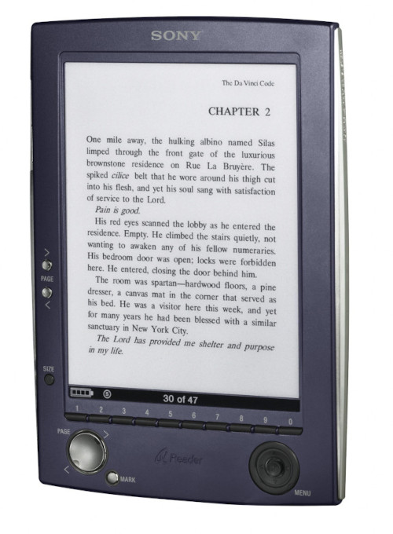

They don’t make them like that any more: Sony PRS-500 e-reader

I bought my Sony PRS-500 on the very day it appeared in shops in the UK. This was September 2006, I recall, at least a year before the first Amazon Kindle hit the UK’s shelves.
The PRS-500 was a revolutionary product. In a review at that time, I wrote:
It’s about time somebody produced a gadget which combined the advantages of computer technology (high storage capacity, rapid searching) with the advantages of real paper books (easy on the eyes; straightforward user interface; low power consumption).
Leaving aside the rather odd implication that printed books had “low power consumption”, I think I captured the novelty of e-ink e-readers. Of course, e-ink displays are two-a-penny these days. You can even get e-ink badges for conferences. It’s just not an exciting technology in 2024.
But, as a person who read novels on a Palm Pilot, I found the PRS-500 remarkable. It was the first device I owned with a screen that worked even direct sunlight, so I could read in the back yard, or on the beach. E-ink screens uses no power to maintain the display, only to change it. So the PRS had a battery life of about one full novel to a charge. This was a radical improvement over any backlit LCD display, then or since. It is mostly these features – daylight-readability and long battery life – that continue make e-readers attractive nearly twenty years on.
But the PRS-500 had something that modern e-readers lack: real buttons you could push.
The basic format and capabilities of an e-book reader have scarcely changed since 2006: even if you weren’t born then, you’ll recognize the PRS-500 as an e-reader, just from its construction.

You’ll see from photo that, unlike a modern Kindle, the PRS has a heap of physical buttons. Kobo e-readers still have a couple of page-turn buttons, but the latest Kindles have no buttons at all. It’s possible to operate the PRS one-handed, and the modern Kobos can at least turn the page, but I’ve never figured out how to do even this much with a modern Kindle. I’ve been told that the generally-accepted way to turn the page on a Kindle, when you’re holding it one-handed, is to tap the screen against your nose.
Of course, the PRS-500 had to have physical buttons, because touch-screen e-ink panels did not exist at the time. Nor did front-lighting, which is commonplace in modern e-readers. If you wanted to read the PRS in the dark, you had to use a flashlight.
The PRS-500 had an SD card slot, which turned out to be crucial, and (naturally) a slot for Sony’s proprietary memory cards. It was almost the same shape, size, and weight as the contemporary Kobo Forma. In fact, the weight was academic, because we all kept our e-readers in stout protective cases that weighed more than the devices. Twenty years ago, we wouldn’t have risked using these expensive devices without a case.
The PRS-500 wasn’t Sony’s first e-reader, although it was the first to have any kind of commercial success. Sony so crippled its forerunner, the Librie, with DRM and copy protection that it was almost unusable. To be fair, the early Kindles had the same problem; but Amazon got away with it, while Sony didn’t, because they had such a huge catalog of books. Kindle owners didn’t have to seek out and install books from other sources.
While Sony did have an on-line store-front, it offered far fewer titles than Amazon’s. Restricting the Librie to Sony’s limited catalog was not a winning strategy.
The PRS-500, however, moderated Sony’s DRM policy; a good thing, because Sony’s store-front did not even extend beyond the USA for the first year after it released the PRS-500. Owners could install DRM-free books in several different formats, including RTF and plain text. This made the whole of the Gutenberg collection available, as well as content scraped from websites and converted. It continues to amuse me to see Kindle owners paying hard coin for public-domain books by Dickens and Austen, when they could just get them from Gutenberg.
Unfortunately, as a Linux user, I found the PRS unsatisfactory in a number of ways. It used a proprietary USB protocol for installing files so, although the PRS could handle documents in several formats, you couldn’t get them onto the device. Linux users could still copy files onto an SD card, and then install the SD card in the reader; but this approach came with certain limitations. In particular, we couldn’t organize files on the SD card into collections. There was also a general suspicion – one that I was never able to test fully – that using the SD card for storage reduced battery life.
But the most bizarre problem for a Linux user was that it never became possible to charge the PRS over USB from a Linux computer – some secret code was needed to enable the internal battery charger. Only Sony’s Windows software could provide this code. This wasn’t a show-stopper because Sony supplied the PRS with a separate battery charger, but it was a limitation that had no business existing, even in 2006.
The PRS had an internal memory capacity of only about 100Mb, but that was sufficient for text and RTF novels – a user could fit more books into memory than the device could manage, given its clunky user interface.
At the time of launch, the PRS-500 attracted mostly negative reviews. A year later the first Kindle, despite being a less capable device, with all the same technical limitations and more, was mostly well received. Partly, I think, this is because Amazon had the content-purchasing part of the ownership experience all worked out. Sony’s store was fiddly to use – even where it was available – and never had even close to the number of books that Amazon’s had. But I suspect that, by the time Amazon released the Kindle, consumers had become more receptive to e-readers in general. Even the latest and greatest e-readers are poor substitutes for a real, printed book, but we now see the advantages. In 2006, reviewers saw mostly the disadvantages.
Like all early e-readers, the PRS-500 suffered from ‘ghosting’, where a page turn leaves a faint after-image of the previous page. This continues to be a potential problem with e-ink technology, and the Kindles didn’t handle it any better than the PRS.
A bigger problem, perhaps, was that the PRS-500 had a quirky user interface, and navigating within books was pretty awkward. I suspect that some of the apparent illogicalities of the user interface resulted from Sony’s attempts to accommodate the limitations of the e-ink display. Redrawing the screen took a second or more, which made it difficult to implement a conventional, menu-based interface. So, even though the PRS included an audio player (with a headphone jack), I was deterred from using it by its hostile user interface.
Sony did go on to release new PRS models, with larger, touch-sensitive screens and back-lighting but, in fact, none of the models had much commercial success. The PRS-505 fixed the stupid limitation in USB charging, so it could be charged from any USB port or charger. This version also made it possible to copy document files directly to the internal storage, rather than forcing users to grapple with the proprietary Windows software. The PRS-505 was the first e-reader that was straightforward to use with Linux.
By the time Sony had released these improved models, they were in direct competition with Amazon, and before long they also had to compete with Barnes and Noble and Rakuten Kobo as well. With hindsight, though, I have to wonder whether Sony really had its heart in e-books? They certainly didn’t seem to fight very hard to keep that line of business. Amazon did have its heart in the battle, and pushed its Kindle products agressively.
The PRS appealed to geeky readers for the same reason that the Kobo readers do today: you could find and install your own content, without using the vendor’s store-front. The PRS-505 was compatible with Linux, even though the PRS-500 had been problematic. But reading is a relatively mainstream activity, and I doubt that ‘geek appeal’ alone would have kept a product alive – not in the face of such intense competition. What was needed, and Sony never had, was an extensive range of affordable books, and a straightforward way to buy and read them. Barnes and Noble had that; even Kobo had (and has) it to some extent.
In the end, Sony pulled out of the e-book market in 2014, after only eight years. They abandoned a technology that they had made comparatively mainstream without much fuss or notice.
These days, the original PRS-500 isn’t much use to anybody, but the PRS-505 remains a useful e-reader, which can be picked up second-hand for a few pounds. There’s no on-line store-front, but it remains possible to copy DRM-free books to it in many formats, including EPUB. But, best of all, the physical buttons are just so much nicer to use than an e-ink touch-screen.